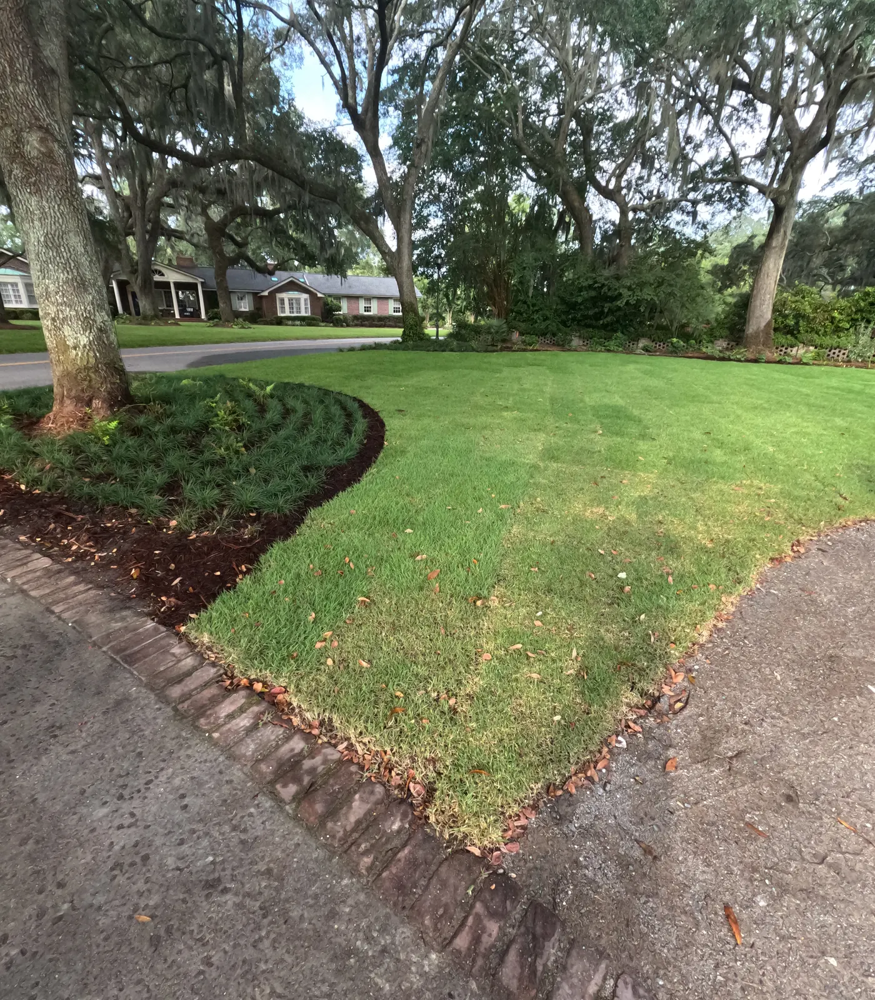

Irrigation & Sprinkler System Installation in Charleston, SC

The System That Decides Whether the Rest of It Lives
Irrigation is the least visible thing we install and the one most responsible for whether a planting looks good in two years. It is also the condition on our plant warranty: we cover replacement of plants and labor for a year, but not for a yard with no automatic watering system. Hand watering is where new plantings die.
We design, install and service systems on residential and commercial properties across Charleston, Mount Pleasant, Summerville and the islands, and we connect to city water or a well.
What an Irrigation System Costs
| Per zone | $1,000 |
|---|---|
| Average lot | 5 zones |
| Backflow preventer and timer | $1,500 |
So a typical five-zone residential system runs about $6,500 installed. Lot size, planting layout and water pressure decide how many zones a property actually needs.
Why Zones Are Not Just a Map
When we calculate zones we are working from water pressure and volume, not just the shape of the yard. A zone asked to run more heads than the supply can feed waters everything badly, and it is the most common reason an existing system never quite gets the far corner green.
What Goes Wrong With Systems We Are Called To Fix
Most mistakes come from poor design. Three things decide whether a system works:
- Proper precipitation rates — how fast water is applied, matched to what the ground can absorb.
- The right type of watering for what is being watered. Lawn, beds and containers are not the same problem.
- Spacing, so coverage overlaps correctly instead of leaving dry rings between heads.
None of that is fixable later with a bigger timer. It is designed in, or it is not.
Controllers, Rain Sensors and Winter
- We install Rain Bird controllers, and you can pay to have the system accessible from your phone.
- Rain sensors are recommended. They stop the system running through a Lowcountry downpour, which saves water and stops the lawn sitting wet.
- Freeze protection here is an insulation bag over the backflow and pipes buried at a proper depth. Charleston is not a blow-out-the-lines climate, but the backflow preventer sits above ground and is the part that splits in a hard freeze.
How We Install It
- Free consultation. We check the water source, pressure and volume before anything is designed.
- Zone design from those numbers, with precipitation rates, watering type and head spacing worked out per zone.
- Installation, including the backflow preventer and controller.
- Setup and walkthrough — schedule set, rain sensor fitted, and you see how to run it.
Irrigation goes in before planting and before sod, alongside drainage and grading.
Service Area Coverage
Cramers Landscaping installs and services irrigation systems across the greater Charleston region, including Charleston, North Charleston, Mount Pleasant, West Ashley, James Island, Johns Island, Daniel Island, Isle of Palms, Sullivan’s Island, Folly Beach, Kiawah Island, Seabrook Island, Awendaw, Goose Creek and Summerville. We tailor each system to local weather patterns, city codes, and property-specific challenges.- Charleston, SC
- Summerville, SC
- Mount Pleasant, SC
- Sullivan’s Island, SC
- West Ashley, SC
- Folly Beach, SC
- James Island, SC
- Johns Island, SC

Bundle Your Irrigation With These Services
Many of our clients install irrigation systems alongside:- Landscape Installation
- Landscape Maintenance
- Drainage & Grading
- Mulching & Bed Maintenance
- Site Structures
Frequently Asked Questions
How much does an irrigation system cost in Charleston?
About $1,000 per zone, and an average lot needs five zones. The backflow preventer and timer add $1,500, so a typical residential system comes to roughly $6,500 installed.
How many zones does my yard need?
It depends on water pressure and volume as much as area. We measure those first, because a zone running more heads than the supply can feed waters everything poorly.
What irrigation controller do you install?
Rain Bird controllers. You can pay to have the system accessible from your phone.
Do I need to winterize irrigation in Charleston?
Not with a full blow-out, but the backflow preventer sits above ground and is what splits in a hard freeze. We fit an insulation bag over it and bury pipes at proper depth.
Can you connect irrigation to a well?
Yes. We connect to city water or to a well.
Why does my existing sprinkler system water unevenly?
Usually poor design: precipitation rates that do not match the ground, the wrong type of watering for what is being watered, or head spacing that leaves dry gaps between heads.